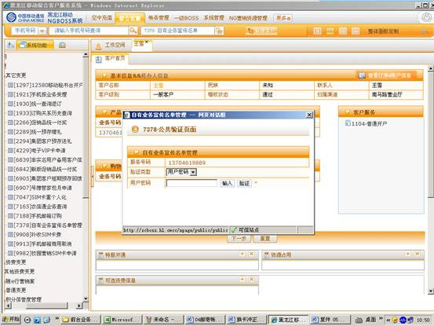
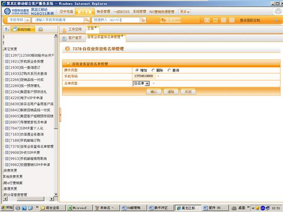
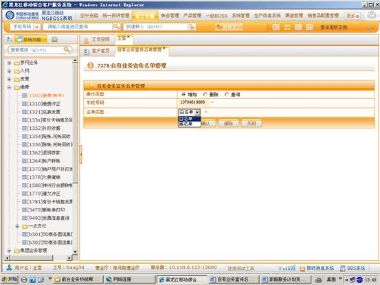
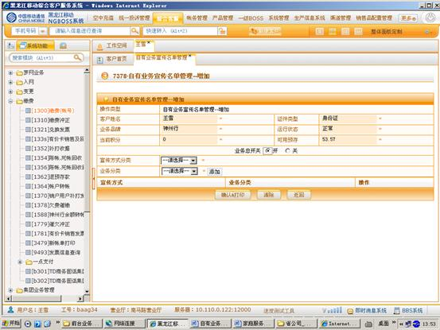
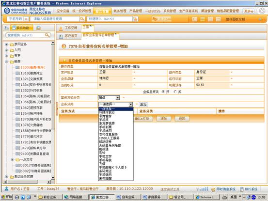
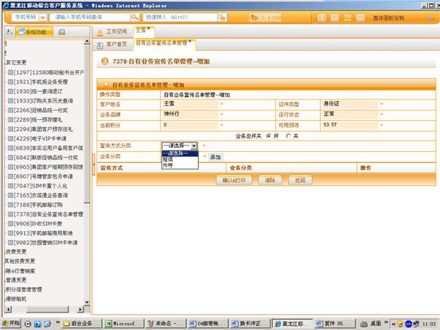
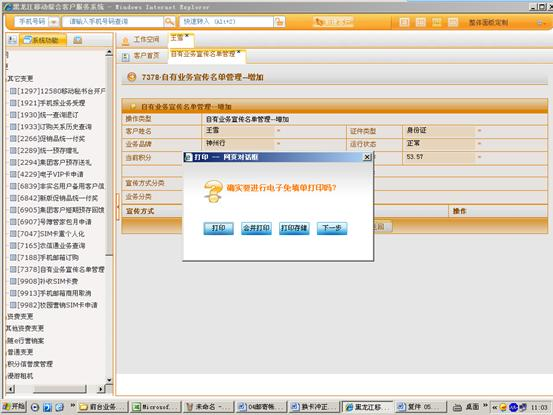

1、进入方式
在“请输入手机号码查询”处输入客户的手机号码，点击查询按钮，点击综合客服-其它变更-自有业务宣传名单管理，或在“快速转入”处输入代码7378自有业务宣传名单管理，点击“回车”确定。
2、界面形式及操作步骤说明
（1）在“请输入手机号码查询”处输入客户的手机号码，点击查询按钮，点击综合客服-其它变更-自有业务宣传名单管理，或在“快速转入”处输入代码7378自有业务宣传名单管理，点击“回车”确定。点击“输入”，由客户通过密码小键盘输入服务密码。

（2）进入自有业务宣传名单管理操作界面，选择“操作类型”。
l 增加：未办理过自有业务宣传名单的客户进行办理，已办理过客户增加宣传业务分类
l 删除：取消自有业务宣传名单管理业务
l 查询：查询是否办理过自有业务宣传名单管理，办理过自有业务宣传名单管理的，查询相关办理业务分类信息

（3）选择“名单类型”，“白名单”或“黑名单”，点击“确认”。

（4）在“业务总开关”处点击“开”（将自动开通“业务分类”内所有业务，即客户将接收到所有业务的宣传内容）。


（5）选择“宣传方式分类”（分为短信和外呼）。

（6）点击“确认&打印”。

（7）根据客户本次是否办理多个业务，点击“打印”或“合并打印”或“打印存储”。
（8）点击“确定”提交本次操作。